PRO
FORTRAN routinesRuby infrastructure not (yet!) as rich as other environmentsModelica pipeline still pending; in fact, not yet started
Installing the Ruby package:
[path]$ git clone https://github.com/CSB-at-ZIB/ZIB_RubyExt
Cloning into 'ZIB_RubyExt'...
remote: Counting objects: 726, done.
remote: Compressing objects: 100% (6/6), done.
remote: Total 726 (delta 0), reused 0 (delta 0), pack-reused 719
Receiving objects: 100% (726/726), 36.65 MiB | 4.26 MiB/s, done.
Resolving deltas: 100% (461/461), done.
Checking connectivity... done.
[path]$ cd ZIB_RubyExt
[path/ZIB_RubyExt]$ make clean; make
... wait! ... [lots of output] ...
[path/ZIB_RubyExt]$ cd tst
And now for something completely different: a real crash course in Ruby!
#! /usr/bin/env ruby
require 'Nlscon'
#--------------------------------------------------------------
q = 3
mTotal = mFit = 10 # def fcn(n,m,mcon,x) [z0, ..., z9] end
nlscon = Nlscon.new [q, mTotal, mFit]
nlscon.f = method(:fcn) # nlscon.df = ...
nlscon.x = [ 1.0, 2.0, 3.0 ] # nlscon.xscal = ...
nlscon.fobs = [ 6.28, -3.7, 2E-5, ..., 42 ] # nlscon.fscal = ...
nlscon.rtol = 1.0E-3 # nlscon.iopt = ...
status = -1 # nlscon.iopt = { "nonlin" => 3, "jacgen" => 3 }
iter = 0 # nlscon.iwk = { "nitmax" => 35 }
while status == -1 && iter < nlscon.iwk["nitmax"] do
iter += 1
status = nlscon.iterate
end
printf "Done! Final result: x = #{nlscon.x}\n" if status == 0
#! /usr/bin/env ruby
require_relative '../../lib/Model' # uses Ruby ext. 'Limex'!
#--------------------------------------------------------------
def predator_prey( t, y, par )
a, b, c, d = par # [ prey, pred ]
[ y[0]*(a - b*y[1] , -y[1]*(c - d*y[0]) ] # [ dy0, dy1 ]
end
#--------------------------------------------------------------
initvar = { t0: 1900.0,
y0: [ 30.0 , 4.0 ],
y0label: [ "n1_0", "n2_0" ],
par: [ 0.5 , 0.02 , 1.0 , 0.02 ],
plabel: [ "alpha", "beta", "gamma", "delta" ] }
model = Model.new :predator_prey, initvar
tspan = [ model.t0, model.t0 + 20.0 ]
t, sol = model.solve_ode tspan
#--------------------------------------------------------------
fout = File.open("predator_prey_solution.dat", "w")
model.save_current_solution fout
fout.close
printf "Time steps t = #{t}\n"
printf "Solution y = #{sol}\n"
Timepoint 1 2
1.900000e+03 3.000000e+01 4.000000e+00
1.900000e+03 3.000126e+01 3.999840e+00
1.900010e+03 3.012758e+01 3.983924e+00
\ \ \ \ \ \ \ \ ... [lots of numbers!] ...
Figure 1: Simulation result and some data (plotted with gnuplot).
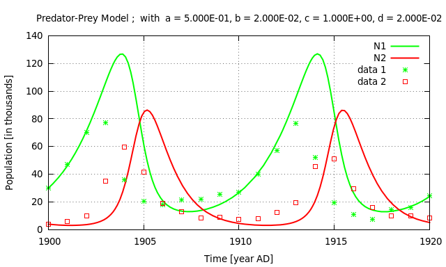
.
Combining the Ruby objects Nlscon and Model,
we can readily perform the parameter identification task on dynamical models
given by ODE systems.
(cf. the Ruby script "check\_Nlscon\_with\_PredPrey\_model.rb")
Figure 2: Fitting result and data after 8 iterations (plotted with gnuplot).
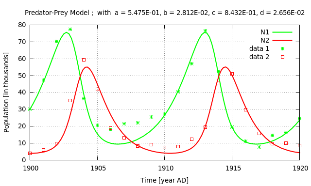
Now, we head for SBML models! At last.
@model:3.1.1=ReactionAB
@species
default:[A] = 1.0 "Initial Concentration A"
default:[B] = 0.0 "Initial Concentration B"
@parameters
k1 = 2.0 "Reaction Rate A -> B"
k_1 = 0.003 "Reaction Rate B -> A"
@reactions
#
@r=re001 "Reaction A -> B"
A -> B
k1 * A
#
@r=r002 "Reaction B -> A"
B -> A
k_1 * B
#
LINUX).Ruby object ModelDL.
[.../GynCycle]$ cd Model_ODE
[.../GynCycle/Model_ODE]$ ./sbml2mod.py GynCycle.xml >myGyn.mod
[.../GynCycle/Model_ODE]$ vi myGyn.mod
[.../MyReacAB/Model_ODE]$ ./mod2sbml.py reacAB.mod >reacAB.xml
[.../MyReacAB/Model_ODE]$ make clean
.
.
.
LINUX).Ruby object ModelDL.
[.../GynCycle]$ cd Model_ODE
[.../GynCycle/Model_ODE]$ make clean; make GynCycle.so
/bin/rm -f *.so *.o
./sbml2adolc GynCycle.xml >ydot_LIMEXcpp.cpp
g++ -I. -I../../../pkg/include -fexceptions -O3 -fPIC
-c ydot_LIMEXcpp.cpp
g++ -shared -s ydot_LIMEXcpp.o -o GynCycle.so
-Wl,-init,set_adolc_num_dir
-Wl,-rpath,/home/tom/Work/Programs/ZIB_RubyExt/pkg/lib
-L/home/tom/Work/Programs/ZIB_RubyExt/pkg/lib -ladolc
-lColPack -lm
cp GynCycle.so ../libODEydot.so
[.../GynCycle/Model_ODE]$ cd ..
LINUX).Ruby object ModelDL.
#! /usr/bin/env ruby
require_relative '../../lib/ModelDL' # uses Ruby ext.'LimexDL'
#--------------------------------------------------------------
# !!! no 'def fcn()' nor 'initvar = {}' !!!
#--------------------------------------------------------------
model = ModelDL.new # loads automagically './libODEydot.so'
model.t0 = -42.5
tspan = [model.t0, model.t0 + 100.0]
t, sol = model.solve_ode tspan
#--------------------------------------------------------------
fout = File.open("#{model.version[0]}_solution.dat","w")
model.save_current_solution fout
fout.close
printf "Saved Solution: Model #{model.version}"
a) LH
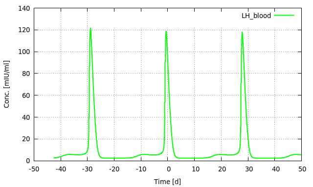
b) FSH
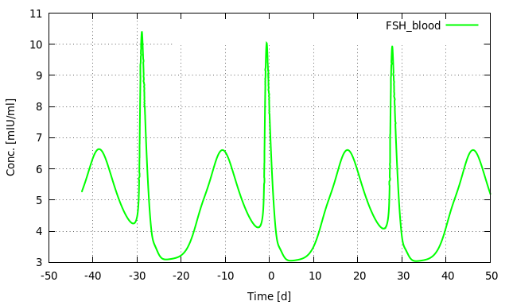
c) Estradiol (E2)
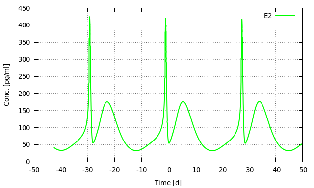
d) Progesterone (P4)
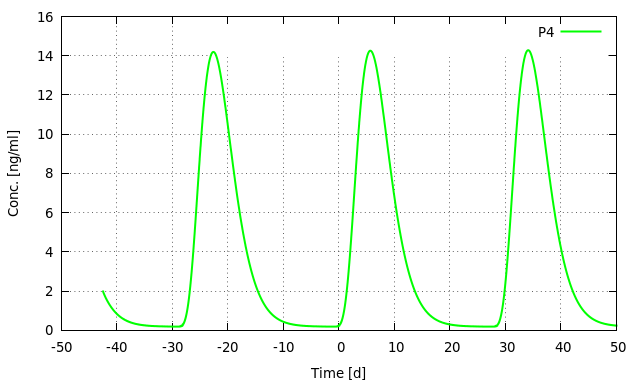
#! /usr/bin/env ruby
require_relative '../../lib/ModelDL'
require_relative '../../lib/Experiment'
require_relative '../../lib/SysBioFit' # uses Ruby ext.'Nlscon'
#--------------------------------------------------------------
$fndata = "rb_Nlscon_with_PAEON_V2_data.dat"
#--------------------------------------------------------------
# Model/dynamic-load ODE
model = ModelDL.new
model.t0 = -42.5
model.hmax = 0.0
model.inistep = 1.0E-4
# model.monitor = 1
#--------------------------------------------------------------
# Measurement/Experiment Data: Timepoint sId1 SD sId2 SD ...
ex1 = Experiment.new
ex1.load_data $fndata # reads data _with_ weights!
#--------------------------------------------------------------
# [...]
Timepoint E2 SD P4 SD LH_blood SD
-1.50e+01 n/a n/a n/a n/a n/a n/a
-1.50e+01 n/a n/a n/a n/a n/a n/a
-1.50e+01 n/a n/a n/a n/a n/a n/a
-1.50e+01 n/a n/a n/a n/a n/a n/a
-1.50e+01 1.60e+01 1.0e+00 2.69e-01 1.0e+00 1.67e+00 1.0e+00
-1.50e+01 n/a n/a n/a n/a n/a n/a
-1.40e+01 n/a n/a n/a n/a n/a n/a
-1.40e+01 n/a n/a n/a n/a n/a n/a
-1.40e+01 n/a n/a n/a n/a n/a n/a
.
.
.
a) LH
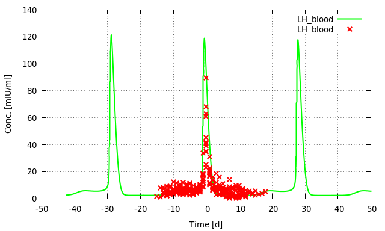
b) FSH
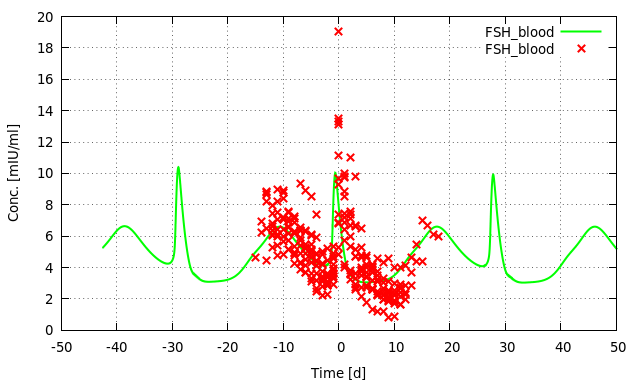
c) Estradiol (E2)
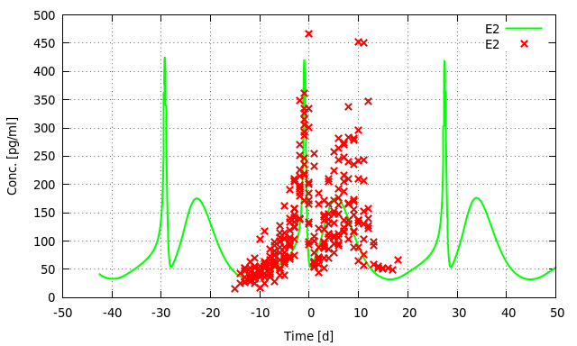
d) Progesterone (P4)
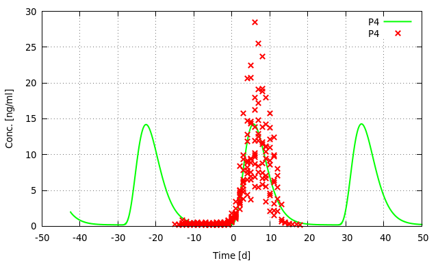
# [...]
#--------------------------------------------------------------
# Parameter Estimation/Identification
pIniGuess = {
"global_p_019_001" => [ 0.958 , 1.0 ], # GynCycle Param 61
"global_p_020_001" => [ 0.925 , 1.0 ], # GynCycle Param 62
"global_p_021_001" => [ 0.7576, 1.0 ] # GynCycle Param 63
}
#--------------------------------------------------------------
# ... computing nPar, mTotal, mFit from 'ex1' (left out here)
#--------------------------------------------------------------
nlscon = SysBioFit.new [nPar,mTotal,mFit]
nlscon.rtol = 1.0E-2
nlscon.pfname = "rb_Nlscon_with_PAEON_V2_parameter.dat"
nlscon.sfname = "rb_Nlscon_with_PAEON_V2_solution.dat"
nlscon.jacgen = 1 # 3
nlscon.rwk = { "cond" => 1.0E+4 }
current_task = { model: model, data: ex1, guess: pIniGuess }
estim = nlscon.identify_par current_task
#--------------------------------------------------------------
# [...]
# [...]
#--------------------------------------------------------------
# Result Output
if estim.has_key?("par") then
printf "\n"
printf " %22s %12s %12s %12s\n",
"Parameter", "confid_lo", "*p_estim*", "confid_up"
printf " %22s %12s %12s %12s\n",
"---------", "---------", "---------", "---------"
estim["pidx"].each_with_index do |j,idx|
label = (j > 0) ? model.pId[j-1] : model.y0Id[-j-1]
printf " %22s % 12.6f % 12.6f % 12.6f\n",
label[0..21],
estim["rwk"]["xl"][idx],
estim["par"][idx],
estim["rwk"]["xr"][idx]
end
printf "\n\n"
printf "incomp. kappa: % .4e\n" , estim["rwk"]["skap"]
printf "achieved rtol: % .4e\n" , estim["rwk"]["prec"]
printf "\n"
printf "Done! (Model: #{model.version})\n"
[...]
Correlation coefficients
------------------------
1 2 3 4 5
1 1.00
2 -0.05 1.00
3 -0.22 0.84 1.00
4 -0.03 -0.98 -0.89 1.00
5 -0.16 -0.88 -0.70 0.83 1.00
Standard deviation of parameters
--------------------------------
No. Estimate sigma(X)
1 0.150D+01 +/- 0.681D+00 = 45.58 %
2 0.487D+00 +/- 0.213D+00 = 43.74 %
3 0.125D+01 +/- 0.119D+01 = 94.93 %
4 0.468D+00 +/- 0.232D+00 = 49.62 %
5 0.447D+00 +/- 0.403D-01 = 9.01 %
[...]
[...]
Independent confidence intervals
--------------------------------
(on 95%-probability level using F-distribution
F(alfa,1,m-n)= 3.88)
1 ( 0.153D+00 , 0.284D+01 )
2 ( 0.674D-01 , 0.907D+00 )
3 ( -0.109D+01 , 0.360D+01 )
4 ( 0.105D-01 , 0.924D+00 )
5 ( 0.367D+00 , 0.526D+00 )
****** Statistics * NLSCON *******
*** Gauss-Newton iter.: 13 ***
*** Corrector steps : 12 ***
*** Rejected rk-1 st. : 4 ***
*** Jacobian eval. : 13 ***
*** Function eval. : 26 ***
*** ... for Jacobian : 0 ***
*************************************
[...]
[...]
12
Parameter confid_lower *p_estim* confid_upper
--------- ------------ --------- ------------
global_p_019_001 0.152736 1.495117 2.837498
global_p_020_001 0.067438 0.486973 0.906507
global_p_021_001 -1.089967 1.252936 3.595838
global_p_022_001 0.010549 0.467514 0.924479
global_p_023_001 0.367445 0.446749 0.526052
incomp. kappa: -1.0000e+00
achieved rtol: -1.0000e+00
["PAEON_V2__OvF_ne_0", "Mon Aug 24 09:18:13 2015",
"001440400693", "PAEON_V2__OvF_ne_0.xml", "with vareq"]
a) LH
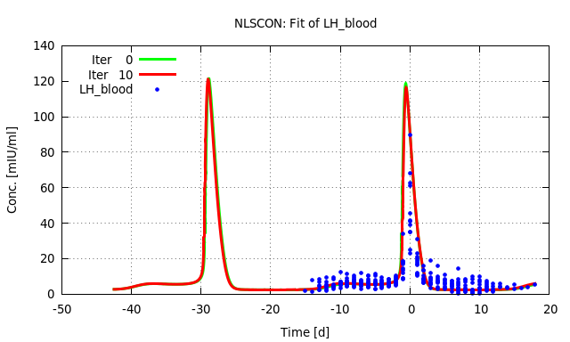
b) FSH
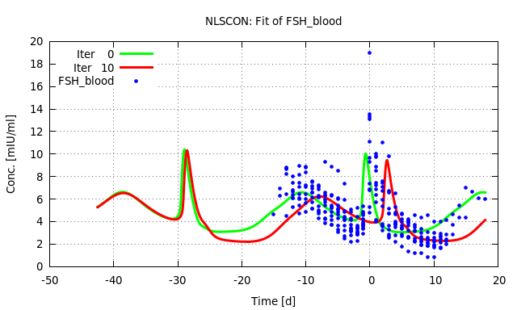
c) Estradiol (E2)
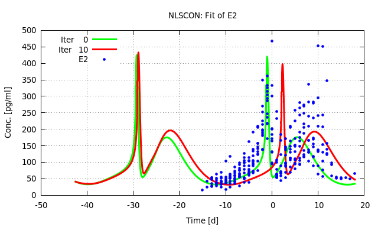
d) Progesterone (P4)
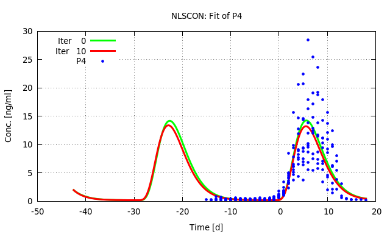